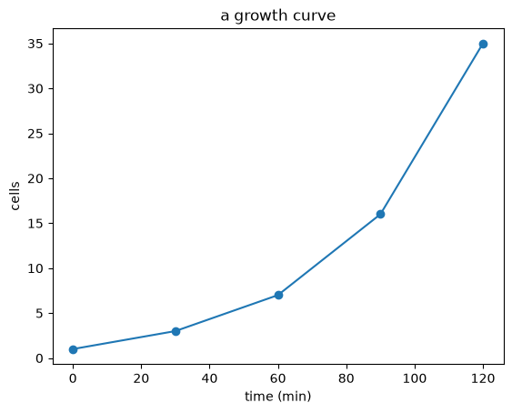
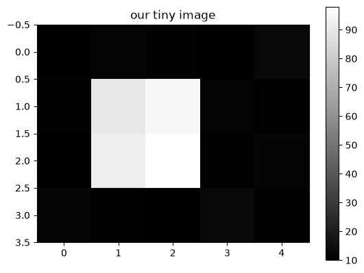
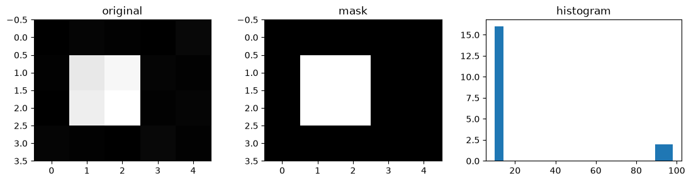

Python Basics#
Duration ~90 min · Session Day 0, at home
This notebook exists so that nobody spends the course fighting the language instead of learning the image analysis.
It is not a general Python course. It teaches exactly the pieces the course notebooks use, in the order you will meet them, and stops. If you have written Python before, skim it in ten minutes and check you recognise everything in the recap at the bottom.
You do not need any course data for this notebook. Everything here makes its own numbers up, so you can work through it before you have downloaded anything.
How to use it: read a cell, run it, then change something and run it again. Reading code teaches you far less than breaking it does.
1. How a notebook works#
A notebook is a list of cells. This one is a text cell. The one below is a code cell.
Click the code cell and press Shift+Enter to run it.
2 + 2
4
The result appears underneath. A cell shows you the value of its last line automatically, which is handy, but only works for the last line.
2 + 2
3 + 3
6
Only 6 appeared. If you want to see more than one thing, ask for it with
print.
print(2 + 2)
print(3 + 3)
4
6
Tip
Cells share their memory, and they run in the order you run them, not the order they appear on the page. If something behaves strangely, the usual cause is cells run out of order: fix it with Kernel ▸ Restart and Run All.
2. Variables#
A variable is a name for a value. = means “give this name to this value”, not
“is equal to”.
diameter = 12
name = "nucleus"
is_bright = True
print(diameter)
print(name)
print(is_bright)
12
nucleus
True
Three kinds of value there, and Python tracks the difference:
type |
what it is |
examples |
|---|---|---|
|
whole number |
|
|
number with a decimal point |
|
|
text, in quotes |
|
|
true or false |
|
type() tells you which one you have. You will use this more than you expect,
usually when something is not behaving.
print(type(diameter))
print(type(12.5))
print(type(name))
print(type(is_bright))
<class 'int'>
<class 'float'>
<class 'str'>
<class 'bool'>
Names can be reused, and the value can change:
count = 10
count = count + 5 # take the old value, add 5, store it back
print(count)
count += 1 # shorthand for exactly the same thing
print(count)
15
16
3. Showing values: f-strings#
You will print numbers constantly: object counts, thresholds, measurements. The
comfortable way is an f-string: an f before the quotes, and any expression
in {curly braces} gets replaced by its value.
count = 34
truth = 39
print(f"found {count} objects")
print(f"the annotation says {truth}")
print(f"we are {truth - count} short")
found 34 objects
the annotation says 39
we are 5 short
You can control how numbers are shown by adding : and a format after the
expression. This matters when a raw float prints as 0.6842105263157895.
fraction = count / truth
print(f"plain : {fraction}")
print(f"2 decimals : {fraction:.2f}")
print(f"percentage : {fraction:.1%}")
print(f"padded : {count:5d} objects")
plain : 0.8717948717948718
2 decimals : 0.87
percentage : 87.2%
padded : 34 objects
format |
means |
example output |
|---|---|---|
|
2 decimal places |
|
|
as a percentage |
|
|
whole number, padded to 5 characters |
|
The padding one is what lines numbers up into neat columns in the course notebooks.
4. Lists and tuples#
A list holds several values in order. Square brackets, commas between.
areas = [236, 512, 480, 1305, 390]
print(areas)
print(f"{len(areas)} values")
print(f"first : {areas[0]}")
print(f"third : {areas[2]}")
print(f"last : {areas[-1]}")
[236, 512, 480, 1305, 390]
5 values
first : 236
third : 480
last : 390
Counting starts at zero. areas[0] is the first item. This is the single most
common source of off-by-one confusion, and [-1] for “the last one” is worth
memorising.
You can take a slice, a range of items, with start:stop. The stop is not
included.
print(areas[0:3]) # items 0, 1, 2 - not 3
print(areas[:3]) # same thing, from the beginning
print(areas[2:]) # from item 2 to the end
[236, 512, 480]
[236, 512, 480]
[480, 1305, 390]
Lists can be changed after they are made:
areas.append(875) # add one to the end
print(areas)
print(f"largest: {max(areas)}, smallest: {min(areas)}, total: {sum(areas)}")
[236, 512, 480, 1305, 390, 875]
largest: 1305, smallest: 236, total: 3798
A tuple is the same idea with round brackets, and cannot be changed afterwards. You mostly meet tuples as the shape of an image.
shape = (348, 512)
print(shape)
print(f"{shape[0]} rows, {shape[1]} columns")
(348, 512)
348 rows, 512 columns
Unpacking#
If you know how many items there are, you can name them all at once. This is everywhere in the course notebooks.
rows, columns = shape # instead of shape[0] and shape[1]
print(f"{rows} x {columns}")
# It works for any matching number of names and values.
low, high = 0, 255
print(f"values run from {low} to {high}")
348 x 512
values run from 0 to 255
5. Dictionaries#
A dictionary stores values under names rather than positions. Curly braces,
name: value pairs.
measurement = {"area": 512, "intensity": 88.4, "label": "nucleus 7"}
print(measurement["area"])
print(measurement["label"])
measurement["perimeter"] = 91.2 # add a new entry
print(measurement)
512
nucleus 7
{'area': 512, 'intensity': 88.4, 'label': 'nucleus 7', 'perimeter': 91.2}
Use a dictionary when the things have names, and a list when they have an order. In the course you will mostly meet dictionaries as a way to keep several results side by side:
results = {"threshold": threshold_labels, "Cellpose": cellpose_labels}
6. Doing something to everything: loops#
areas = [236, 512, 480, 1305, 390]
for area in areas:
print(f"this object covers {area} pixels")
this object covers 236 pixels
this object covers 512 pixels
this object covers 480 pixels
this object covers 1305 pixels
this object covers 390 pixels
Read it as “for each item in areas, call it area, and do the indented
part”.
The indentation is the syntax. Python has no braces or end keyword; the
indented lines are the body of the loop, and the first unindented line is after
it. Four spaces is the convention, and Jupyter inserts them for you when you
press Tab.
big = 0
for area in areas:
if area > 450:
big += 1 # this line is inside BOTH the loop and the if
print(f"{big} objects are larger than 450 px")
3 objects are larger than 450 px
Two loop helpers you will see constantly:
enumerategives you the position as well as the item;zipwalks two lists side by side.
for position, area in enumerate(areas):
print(f"object {position}: {area} px")
object 0: 236 px
object 1: 512 px
object 2: 480 px
object 3: 1305 px
object 4: 390 px
names = ["nucleus", "nucleus", "debris", "clump", "nucleus"]
for name, area in zip(names, areas):
print(f"{name:8s} {area:5d} px")
nucleus 236 px
nucleus 512 px
debris 480 px
clump 1305 px
nucleus 390 px
7. Making decisions#
threshold = 450
for area in areas:
if area < 100:
verdict = "too small - probably noise"
elif area > 1000:
verdict = "too big - probably two objects merged"
else:
verdict = "plausible"
print(f"{area:5d} px -> {verdict}")
236 px -> plausible
512 px -> plausible
480 px -> plausible
1305 px -> too big - probably two objects merged
390 px -> plausible
if … elif … else. Only the first matching branch runs.
The comparisons available are the ones you would expect: <, >, <=, >=,
== for “is equal to”, and != for “is not equal to”. Note the double equals:
a single = assigns, and writing if area = 450 is an error rather than a
comparison.
8. Functions#
A function is a named piece of code you can run again with different inputs.
Define it once with def, then call it as often as you like.
def describe(area):
"""Say whether an object's area is plausible for a nucleus."""
if area < 100:
return "too small"
if area > 1000:
return "too big"
return "plausible"
print(describe(45))
print(describe(512))
print(describe(1305))
too small
plausible
too big
everything indented under
defis the function’s body;returnhands a value back to whoever called it, and stops the function;the text in triple quotes is a docstring: a note to your future self.
Arguments with defaults#
A function can have arguments with a default value, which you may leave out.
def describe(area, smallest=100, largest=1000):
if area < smallest:
return "too small"
if area > largest:
return "too big"
return "plausible"
print(describe(45)) # uses the defaults
print(describe(45, smallest=20)) # overrides one of them
too small
plausible
Naming the argument when you call it, smallest=20, is a keyword argument.
The library functions in this course have a lot of these, and naming them makes
the call readable:
gaussian(image, sigma=2, preserve_range=True)
You would have no idea what gaussian(image, 2, True) meant six months later.
9. Using other people’s code#
Almost nothing you need is written from scratch. You import it.
import numpy as np # the whole library, under a short nickname
from skimage.filters import threshold_otsu # one specific function
print(np.sqrt(16))
4.0
Two forms:
import numpy as np: everything, reached asnp.something. Theas npis a universal convention; do not invent your own.from x import y: pull one name out, so you can writey(...)directly.
Put your imports in the first code cell of a notebook, so a reader can see the dependencies at a glance.
10. NumPy arrays#
This is the one that matters. An image is a NumPy array, a grid of numbers, and every image operation in this course is an array operation.
import numpy as np
# A tiny 4x5 "image", made by hand.
image = np.array([
[10, 12, 11, 10, 13],
[11, 90, 95, 12, 11],
[10, 92, 98, 11, 12],
[12, 11, 10, 13, 11],
])
print(image)
[[10 12 11 10 13]
[11 90 95 12 11]
[10 92 98 11 12]
[12 11 10 13 11]]
print("shape:", image.shape) # (rows, columns)
print("dtype:", image.dtype) # what kind of number
print("size :", image.size) # how many values in total
shape: (4, 5)
dtype: int64
size : 20
shape is (rows, columns): height first. Nearly everyone gets this the
wrong way round at least once.
Useful ways to make an array without typing it out:
print(np.zeros((2, 3))) # filled with 0
print()
print(np.arange(0, 10, 2)) # 0 up to (not including) 10, in steps of 2
print()
print(np.linspace(0, 1, 5)) # 5 values evenly spaced from 0 to 1
[[0. 0. 0.]
[0. 0. 0.]]
[0 2 4 6 8]
[0. 0.25 0.5 0.75 1. ]
11. Indexing and slicing an array#
Same rules as lists, but with a row and a column.
print("one pixel :", image[1, 2]) # row 1, column 2
print("a whole row :", image[1])
print("a whole column :", image[:, 2]) # ':' means 'all of them'
one pixel : 95
a whole row : [11 90 95 12 11]
a whole column : [11 95 98 10]
# A rectangle: rows 1 to 2, columns 1 to 2. This is cropping.
crop = image[1:3, 1:3]
print(crop)
print("shape:", crop.shape)
[[90 95]
[92 98]]
shape: (2, 2)
12. Asking a question of every pixel at once#
This is the idea that makes array code short, and it is worth slowing down for.
Compare the whole array to a number, and you get back an array of True and
False: one answer per pixel. No loop needed.
bright = image > 50
print(bright)
[[False False False False False]
[False True True False False]
[False True True False False]
[False False False False False]]
An image with only two values like this is called a binary image, and it is exactly what thresholding produces. When you use one to select pixels from another image, as below, it is usually called a mask: same array, different role.
Because True counts as 1 and False as 0, you can immediately ask how many
pixels passed:
print("bright pixels :", bright.sum())
print("fraction bright :", bright.mean())
print(f"as a percentage : {bright.mean():.1%}")
bright pixels : 4
fraction bright : 0.2
as a percentage : 20.0%
You can also use a mask to pull out just those values, or to change them:
print("the bright values:", image[bright])
print("their average :", image[bright].mean())
copy = image.copy() # work on a copy, not the original
copy[bright] = 0 # set every bright pixel to zero
print(copy)
the bright values: [90 95 92 98]
their average : 93.75
[[10 12 11 10 13]
[11 0 0 12 11]
[10 0 0 11 12]
[12 11 10 13 11]]
Warning
copy = image does not make a copy: it gives the same array a second name,
and changing one changes the other. Use .copy() when you mean a copy.
13. Summarising an array#
print(f"smallest : {image.min()}")
print(f"largest : {image.max()}")
print(f"average : {image.mean():.1f}")
print(f"total : {image.sum()}")
print(f"spread : {image.std():.1f}")
smallest : 10
largest : 98
average : 27.8
total : 555
spread : 33.0
These are methods: functions that belong to the array, called with a dot
after it. You will use .max() more than any other, usually to ask how many
objects a label image contains.
14. Plotting#
import matplotlib.pyplot as plt
plt.plot([0, 30, 60, 90, 120], [1, 3, 7, 16, 35], "o-")
plt.xlabel("time (min)")
plt.ylabel("cells")
plt.title("a growth curve")
plt.show()

# An array can be drawn as an image.
plt.imshow(image, cmap="gray")
plt.colorbar()
plt.title("our tiny image")
plt.show()

Several panels side by side#
plt.subplots makes a figure with several panels. It hands back two things:
the figure and the panels, which is why you see that tuple unpacking from
section 4 again.
fig, axes = plt.subplots(1, 3, figsize=(11, 3))
axes[0].imshow(image, cmap="gray")
axes[0].set_title("original")
axes[1].imshow(image > 50, cmap="gray")
axes[1].set_title("mask")
axes[2].hist(image.ravel(), bins=20)
axes[2].set_title("histogram")
plt.tight_layout()
plt.show()

axes is a list of panels, so axes[0] is the first. .ravel() flattens the 2D
image into a plain list of values, which is what a histogram needs.
A pattern you will see often is zip from section 6, used to pair panels with
things to draw in them:
for ax, title in zip(axes, ["original", "mask", "histogram"]):
...
15. File paths#
from pathlib import Path
folder = Path("data") / "bbbc020" / "images"
filename = folder / "2h_1_nuclei.tif"
print(filename)
print("name only:", filename.name)
print("does it exist here?", filename.exists())
data/bbbc020/images/2h_1_nuclei.tif
name only: 2h_1_nuclei.tif
does it exist here? False
The / between path pieces reads oddly at first, but it builds the right kind of
path on every operating system: no worrying about / versus \.
In the course notebooks DATA is already defined for you, so you will write
DATA / "bbbc020" / "images" / "2h_1_nuclei.tif".
16. Tables#
Once you have measured objects you will have a table, and pandas is the tool
for those. You only need a little of it.
import pandas as pd
table = pd.DataFrame({
"area": [236, 512, 480, 1305, 390, 875],
"roundness": [0.91, 0.88, 0.95, 0.42, 0.89, 0.55],
"kind": ["nucleus", "nucleus", "nucleus", "clump", "nucleus", "clump"],
})
table
| area | roundness | kind | |
|---|---|---|---|
| 0 | 236 | 0.91 | nucleus |
| 1 | 512 | 0.88 | nucleus |
| 2 | 480 | 0.95 | nucleus |
| 3 | 1305 | 0.42 | clump |
| 4 | 390 | 0.89 | nucleus |
| 5 | 875 | 0.55 | clump |
print(table["area"]) # one column
print()
print(table.shape) # (rows, columns)
print()
print(table["area"].mean()) # columns behave like arrays
0 236
1 512
2 480
3 1305
4 390
5 875
Name: area, dtype: int64
(6, 3)
633.0
Filtering uses the same mask idea as section 12: a condition on a column gives
True/False per row, and the table keeps the True ones.
big = table[table["area"] > 450]
print(big)
area roundness kind
1 512 0.88 nucleus
2 480 0.95 nucleus
3 1305 0.42 clump
5 875 0.55 clump
# Split into groups and summarise each one.
print(table.groupby("kind")["area"].median())
kind
clump 1090.0
nucleus 435.0
Name: area, dtype: float64
That is genuinely most of what the course needs from pandas: make a table, look at a column, filter rows, group and summarise.
Recap#
The things to recognise. If you can read all of these, you are ready.
count = 34 # a variable
print(f"found {count} objects") # an f-string
print(f"{fraction:.1%}") # formatted to 1 decimal, as a percentage
areas = [236, 512, 480] # a list
areas[0], areas[-1] # first and last
rows, columns = image.shape # unpacking a tuple
for area in areas: # a loop
if area > 450: # a decision - note the indentation
print(area)
for i, area in enumerate(areas): ... # position as well as item
for name, area in zip(names, areas): ... # two lists side by side
def describe(area, smallest=100): # a function with a default
return "too small" if area < smallest else "fine"
import numpy as np # a library, nicknamed
from skimage.filters import threshold_otsu
image.shape, image.dtype # (rows, columns) and the number type
image[1, 2] # one pixel
image[1:3, 1:3] # a crop
mask = image > 50 # a question asked of every pixel
mask.sum(), mask.mean() # how many, what fraction
image[mask].mean() # average of just those pixels
labels.max() # how many objects
fig, axes = plt.subplots(1, 3) # several panels
axes[0].imshow(image, cmap="gray")
DATA / "bbbc020" / "images" / "x.tif" # a file path
table["area"].mean() # a column
table[table["area"] > 450] # filtered rows
table.groupby("kind")["area"].median() # grouped summary
Anything unfamiliar? Go back to that section and change the code until it makes sense.
Next: 00_python_basics_ex to practise, and then the course proper.